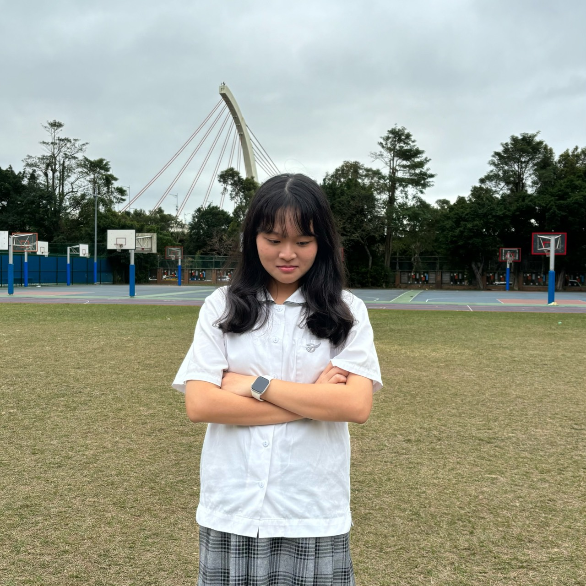
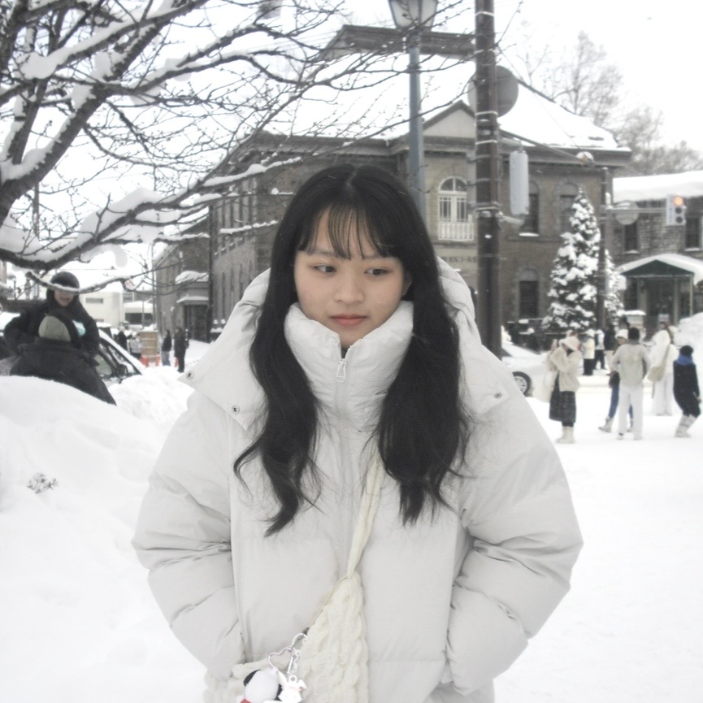

Freshman Year
剛升上高一時，進入一個全新的環境，身邊的人和事都變得陌生，也正式展開了我的高中生活。開學不久後，我們參加了公訓活動，在各種團隊合作的挑戰中，大家逐漸熟悉彼此，也讓原本陌生的同學慢慢變成能一起努力的夥伴。
在課外活動方面，我加入了英研社，透過社團活動認識不同國家的節慶文化，也曾與其他學校一起參與校外迎新活動，讓我有機會接觸到不同的人與環境。
班級生活中也有許多印象深刻的事情，例如班導曾帶著全班一起去看電影，讓平常忙碌的學校生活多了一點輕鬆的時刻。到了校慶時，我們不只一起籌備班級攤位，也在大隊接力中拿到了第一名。從準備攤位到活動當天的忙碌過程，雖然有些辛苦，但大家一起分工合作、為同一個目標努力，也讓這些經驗變得特別難忘。 這些活動讓我在嘗試與參與中慢慢適應高中生活，也讓我更期待接下來三年的各種可能。
Learn More ⮕
Sophomore Year
到了高二，我已經逐漸熟悉高中生活的節奏，也迎來整個高中最忙碌、但同時也最精彩的一年。
這一年我擔任社團幹部，和其他幹部一起負責社團的大小事，從規劃活動到處理社團內部的事務，都需要大家一起討論與分工。我們也舉辦了許多活動，像是聖誕聚餐和寒訓，在準備活動的過程中雖然有不少事情要協調，但也讓我學到如何和不同的人合作。
高二的生活同時也充滿各種挑戰。除了社團活動之外，課業和報告的壓力也明顯增加，我開始學著在忙碌的生活中安排時間，努力在課業與活動之間找到平衡。校慶時，我們以社團為單位擺攤，我主要負責場地佈置，和學弟妹們一起討論攤位想呈現的風格；班上也準備了班舞，從挑選歌曲到編排舞蹈，大家一起投入時間練習，留下很多有趣的回憶。
到了下學期的畢業旅行，像是為整個高二畫下一個熱鬧又圓滿的句點，也讓我開始慢慢收心，準備迎接接下來更重要的大學考試。
Learn More ⮕
Junior Year
高三這一年，重心幾乎全部放在課業上，那段時間我們少了熱鬧的社團活動，每天的生活圈縮小到只剩下教室和補習班。
從暑假一路拚到隔年一月，這種長時間的抗壓測試真的不容易，過程中經歷過各種情緒起伏，每天睜開眼就是數不完的參考書和考卷。這半年的日子其實很單調乏味，大家擠在教室裡悶頭讀書，雖然壓力大到哭過，但也因為和朋友一起奮鬥而笑過。
最後的成績雖然跟原本想的有點落差，心裡難免有些遺憾，但幸好過程中的努力沒有白費，我也順利申請到了自己想要的科系。
Learn More ⮕